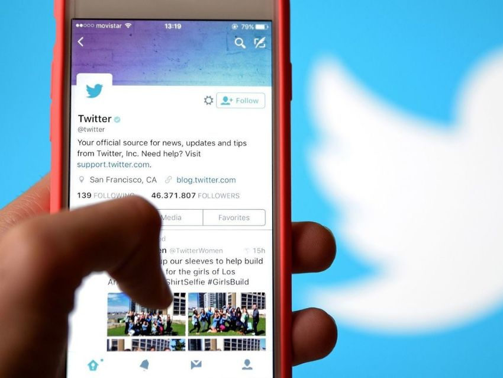

TTwitter, ahora conocido como X, es una plataforma de microblogging donde los usuarios pueden publicar y compartir mensajes cortos llamados “tweets”. Permite la interacción a través de retweets, likes y respuestas. Fue creada en 2006 por Jack Dorsey, Noah Glass, Biz Stone y Evan Williams.
Origen: Twitter fue creado por Jack Dorsey, Noah Glass, Biz Stone y Evan Williams.
Su lanzamiento inicial fue en marzo de 2006, con la idea de proporcionar una plataforma
para compartir actualizaciones breves (de 140 caracteres, luego ampliado a 280) entre usuarios.
Crecimiento: Desde su lanzamiento, Twitter ha crecido exponencialmente, convirtiéndose en una de
las plataformas de redes sociales más influyentes. Ha introducido características innovadoras,
como los hashtags (#), retweets y trending topics, que han transformado la manera en que se realiza
el seguimiento de eventos y temas en tiempo real.
Adquisiciones y Expansión: Twitter ha adquirido varias empresas a lo largo de los años, incluyendo Vine
(una plataforma de videos cortos que fue cerrada en 2017) y Periscope (una plataforma de streaming en vivo
que también fue descontinuada). Twitter ha ampliado su influencia mediante la implementación de nuevas
funcionalidades y la mejora de su plataforma.
|  |
|